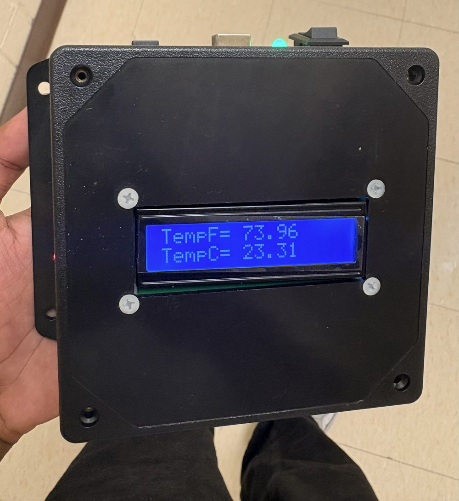
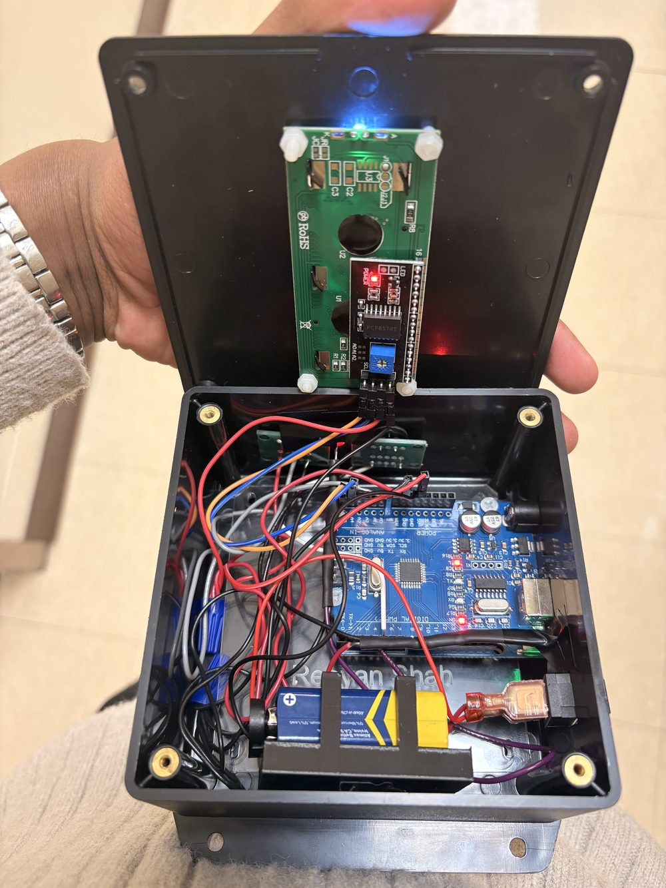

A boxed monitor that shows the temperature in °F and °C, and flashes and sounds an alarm whenever it leaves a safe 80–90 °F band, without ever freezing the display.
CourseEK 131, Boston University
DateApril 2026
HardwareArduino, analog sensor, 16×2 LCD
CodeArduino
Sheet5 of 6

Fig. 1The finished unit showing 73.96 °F and 23.31 °C.

Fig. 2Inside: Arduino board, wiring, LCD with I2C backpack and 9 V battery.
How it works
An analog temperature sensor gives 10 mV per °C with a 0.5 V offset. The code converts the reading to °C and then °F.
Once a second, the LCD updates both readings.
If the temperature is below 80 °F or above 90 °F, a red LED and the buzzer pulse every 500 ms, with two alternating tones.
When it starts up, it plays the Pac-Man intro tune.
Why non-blocking code matters
The simple way to blink an alarm is delay(), but that stops the whole program, so the screen would freeze while the alarm sounds. Instead, every task checks millis() and only acts when its own interval has passed. The display, LED and two-tone buzzer each run on their own timer, side by side.
Alarm logic
if (tempF < 80 || tempF > 90) {
// Toggle the whole alarm on/off every 500 ms
if (currentMillis - alarmMillis >= 500) {
alarmMillis = currentMillis;
alarmState = !alarmState;
digitalWrite(redLED, alarmState);
if (!alarmState) noTone(buzzerPin);
}
// Alternate two tones every 80 ms while the alarm is on
if (alarmState && currentMillis - wakaMillis >= 80) {
wakaMillis = currentMillis;
wakaHigh = !wakaHigh;
tone(buzzerPin, wakaHigh ? 494 : 330);
}
} else {
digitalWrite(redLED, LOW);
noTone(buzzerPin);
alarmState = false;
}